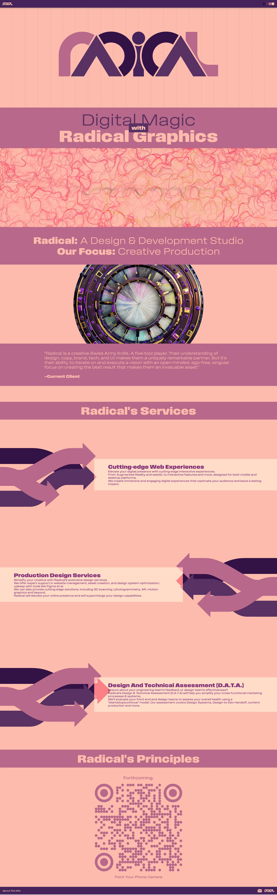
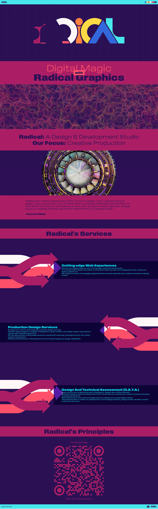
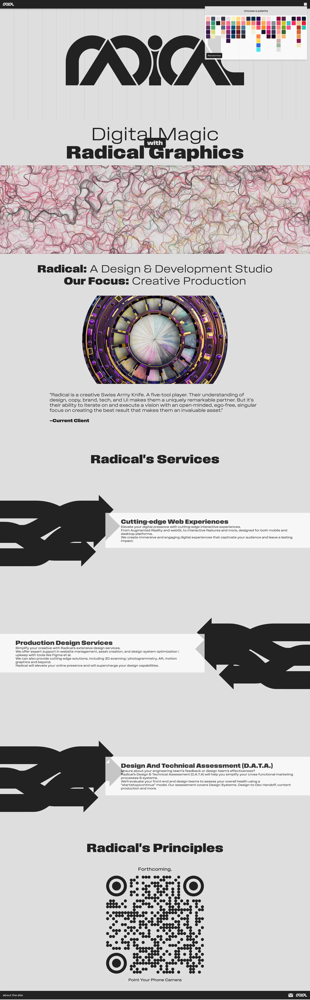
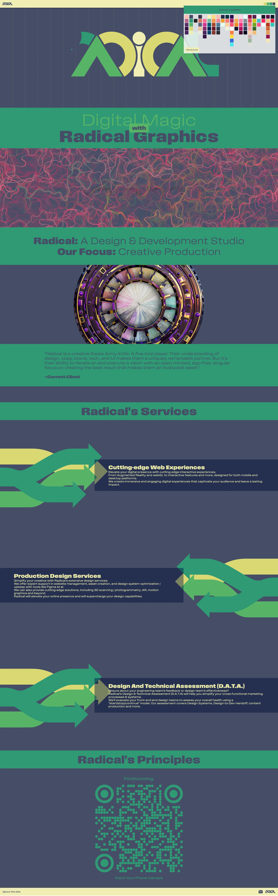
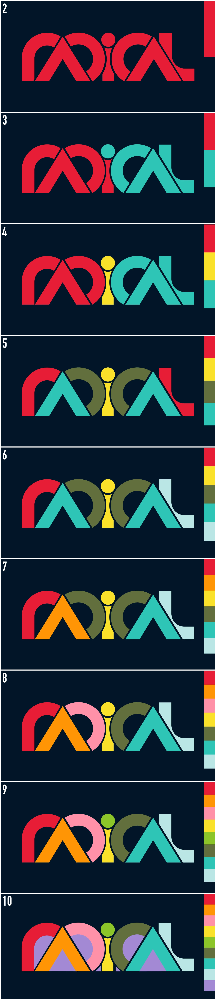

Radical Graphics
Radical.Graphics is a creative technology studio specializing in cutting-edge front-end development and immersive visual design. The company blends technical innovation with artistic direction to build visually stunning, performant web experiences.
I started this company when I realized the potential that AI brings to a generalist like myself. AI makes an accountant a better accountant, a designer a better designer, an engineer a better engineer—but it doesn't make a designer an accountant.
For generalists, this is great! I feel like I have superpowers.

The site, https://radical.graphics, is created in vanilla javascript. I tried as much as possible to stick to that - although I used some core libraries like three.js.
Radical's brand is emphasizing the 'adaptable' feature of being a generalist - as such I created a brand that wasn't tied to a color palette; the brand could adapt to the current client's colors in presentations, etc.
On the site the Lottie animations and scroll-driven animations are all dynamically-styled based on the colors assigned.




The logo was designed to work with any color palette, from 2-10 colors - as seen below:

The logo adapts to client colors, and works with palettes from 2-10 colors.